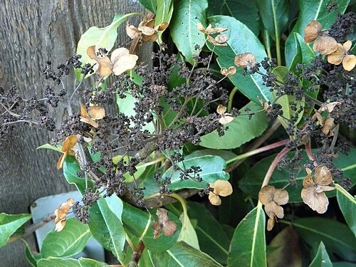

Flower problems

Soft, rotting flowersInspect overlapping petals for water-soaked tissue. Compare newly opened flowers with older blooms.

Dry, brown flowersIs browning confined to older blooms? Check unopened buds and the leaves on the same stem.

Wilting flowersCheck the flower stalk, the moisture deeper in the pot and whether the foliage is drooping too.

Caterpillars on flowersLook behind petals and around buds for larvae, irregular bites or pellet-like droppings.

Beetles on flowersLook for beetles actually chewing petals. Record their shape and when they visit.

Snouted beetles on buds and drooping flower budsLook just below a drooping unopened bud. Check whether the short stalk is partly cut and whether a small beetle with a snout is present on nearby buds.